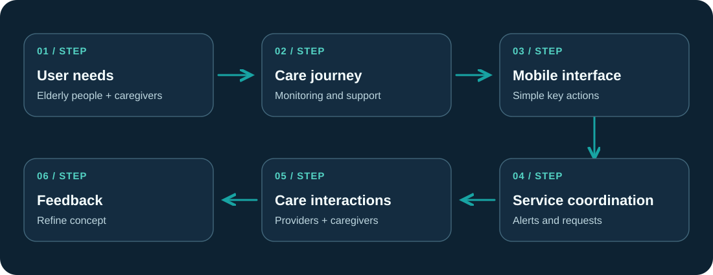

Define user journeys
The concept considered elderly people, caregivers and care providers as different user groups with different goals.
Connecting caregiving journeys with clear, accessible service design.
A cross-functional product concept combining elder-care coordination, remote monitoring and responsive support, with a focus on the user experience.
Elderly people and caregivers can face fragmented experiences when arranging routine support, care visits and emergency assistance. The team explored how one coordinated service might reduce this friction.
Served as UI/UX lead and helped align product experience with technical, care and business perspectives.
The diagram simplifies the key ideas into an original, conceptual workflow—not a reproduction of internal architecture.

Conceptual architecture · Simplified for public communication · Not a proprietary diagram
Concrete technical responsibilities, without private code or configuration details.
The concept considered elderly people, caregivers and care providers as different user groups with different goals.
My focus was on UI/UX design, including making the proposed mobile experience understandable and accessible.
The proposal combined a digital interface with assumptions about operations, partners and privacy requirements that would need validation.
A visually appealing interface is insufficient if elderly people cannot navigate urgent and routine tasks with confidence.
Care coordination involves multiple people, and information needs to be understood by both the person receiving care and their support network.
The concept did not establish real-world service adoption, clinical outcomes or realized business performance.
A cross-disciplinary concept deck and UI prototype were produced. This was a proposed service and business plan, not a launched product.
Concept-stage work; projections and unvalidated business assumptions are intentionally omitted.
This case study is a high-level presentation of selected work. It does not disclose proprietary diagrams, internal configurations, private datasets, credentials or confidential business information. Publication should still be checked against applicable employer policies.